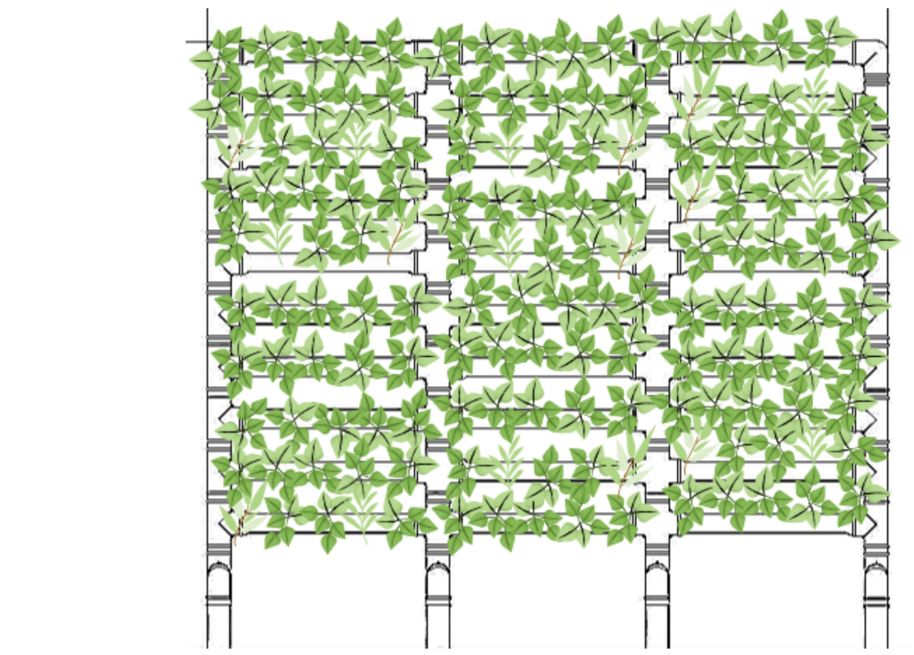

새로운 프로젝트에
부활피앤피 소개
우리가 항상 피곤한 이유, 혹시 공기 때문이라고 생각해보지 않으셨나요?

WHO 데이터에 따르면, 모든 세계인구(99%)가 WHO 지침 한계를 초과하는 높은 수준의 오염물질을 포함한 공기를 호흡하고 있습니다. 2020년에는 대기오염으로 인해 연간 약 320만명이 사망하는 것으로 추산됩니다.
실내공기, 공공시설공기, 산업배기 및 외기 전체의 성인 1일
공기 섭취 비율은 약 83%(무게로는 약 20-30 kg)로 음료,
물과 음식류의 비율 약 15%에 비해 훨씬 많습니다.
특히 실내공기의 섭취비율이 약 57%로 가장 높아
실내공기질(IAQ)이 인체의 건강에 영향을 미치는 가장 큰
요인 중에 하나입니다.
규제 대상 오염물질인
미세먼지, 포름알데히드, 일산화탄소, 이산화탄소,
부유세균으로 모두 식물에 의해 제거가 가능합니다.
식물이 주는 효과
-
01
장식적 기능
생명력 있는 식물로 공간을 아름답게 연출 면, 직선, 색채 등을 활용하여 건물 자체를 더욱 특색있게 조성
-
02
장식적 기능
생명력 있는 식물로 공간을 아름답게 연출 면, 직선, 색채 등을 활용하여 건물 자체를 더욱 특색있게 조성
-
03
장식적 기능
생명력 있는 식물로 공간을 아름답게 연출 면, 직선, 색채 등을 활용하여 건물 자체를 더욱 특색있게 조성
-
04
장식적 기능
생명력 있는 식물로 공간을 아름답게 연출 면, 직선, 색채 등을 활용하여 건물 자체를 더욱 특색있게 조성
-
05
장식적 기능
생명력 있는 식물로 공간을 아름답게 연출 면, 직선, 색채 등을 활용하여 건물 자체를 더욱 특색있게 조성
눈으로 확인하세요
부활피앤피의 환경을 생각한 수직정원으로 자연을 경험하세요
| 구분 | 부활피앤피 | 일반 플랜트월 | 공기청정기 |
|---|---|---|---|
| 가격 | O | X | X |
| 친환경 제품 | O | X | X |
| 공기정화능력 | O | ? | ? |
| 부분교체 AS | O | X | X |
| 유해물질제거 | O | O | X |
| 방문관리 | O | X | ? |
| 습도관리 | O | ? | X |
| 먼지제거 | O | X | ? |
| 모듈형 제품 | O | X | X |
| 유지관리 용이성 | O | X | O |
| 제품디자인 | O | X | O |
| 벌레발생율 | O | X | O |
부활피앤피 제품 모델
-
*옆으로 한 줄 추가시 850mm 증가,
위로 한 줄 추가시 200mm 증가친환경 수직정원
벽면에 별도의 고정 장치 없이 세워둘 수 있는 단면형 수직정원 입니다. 벽면의 형태에 맞게 90도로 꺽이는 부분도 연결설치가 가능한 제품입니다. 벽면의 길이와 높이에 맞게 사이즈 변경 가능합니다.
-
*옆으로 한 줄 추가시 850mm 증가,
위로 한 줄 추가시 200mm 증가친환경 파티션정원
어떤 공간이든 별도의 고정 장치 없이 세워둘 수 있는 양면형 파티션 정원입니다. 자연스러운 공간분리가 가능한 제품입니다. 공간의 크기에 맞게 길이와 높이가 변경이 가능합니다.
모듈형 제품으로
내가 원하는 공간에 맞게 조립 가능합니다.
-
①T연결대

-
②십자연결대
-
③ㄱ연결대

-
④바 연결대

-
⑤속 연결대

-
⑥화분

-
⑦화분덮개
-
⑧홀더

-
⑨일체형 화분 (5구)

-
⑩분리형 화분 (8구)

2cm 수위에 물이 자동으로 오버플로우되며 물이
순환됩니다.

*박막식구조: 물을 일정시간 흐르게 함으로써 수분부족과 산소부족을 쉽게 해결하는 수경재배방법
*수동형 같은 경우 위와같은 형태로 설치가 되며 자동형일 경우 현장 여건에 따라 배관 작업이 진행 됩니다.